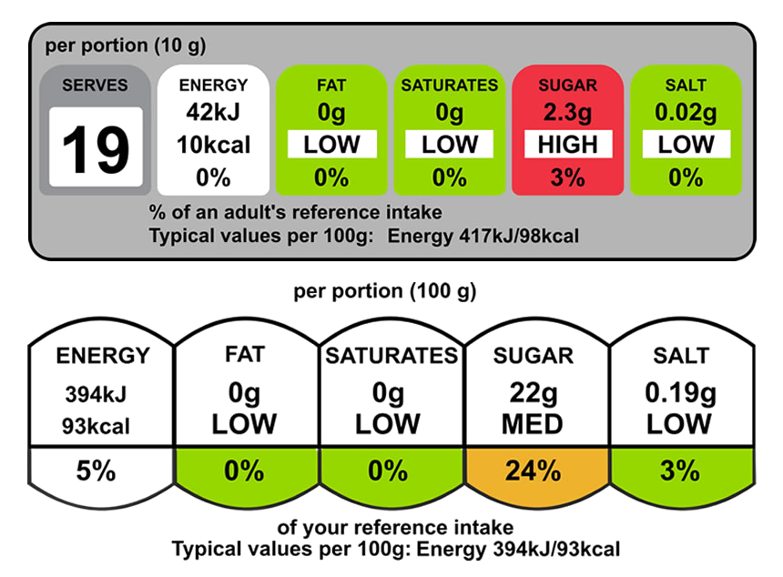

All about calories
Understanding calories
The amount of energy in an item of food or drink is measured in calories. When we eat and drink more calories than we use up, our bodies store the excess as body fat. If this continues over time we may put on weight.
As a guide, an average man needs around 2,500kcal (10,500kJ) a day to maintain a healthy body weight. For an average woman, that figure is around 2,000kcal (8,400kJ) a day. These values can vary depending on age, size and levels of physical activity, among other factors.
Calories and energy balance
Our bodies need energy to keep us alive and our organs functioning normally. When we eat and drink, we put energy into our bodies. Our bodies use up that energy through everyday movement, which includes everything from breathing to running.
To maintain a stable weight, the energy we put into our bodies must be the same as the energy we use by normal bodily functions and physical activity. An important part of a healthy diet is balancing the energy you put into your bodies with the energy you use.
For example, the more physical activity we do the more energy we use. If you consume too much energy on one day, don't worry; just try to take in less energy on the following days.
Checking calories in food
Knowing the calorie content of food and drink can help ensure you're not consuming too much.
The calorie content of many shop-bought foods is stated on the packaging as part of the nutrition label.
This information will appear under the "Energy" heading. The calorie content is often given in kcals, which is short for "kilocalories", and also in kJ, which is short for "kilojoules". A "kilocalorie" is another word for what is commonly called a "calorie", so 1,000 calories will be written as 1,000kcals.
Kilojoules are the metric measurement of calories. To find the energy content in kilojoules, multiply the calorie figure by 4.2.
The label will usually tell you how many calories are contained in 100 grams or 100 millilitres of the food or drink, so you can compare the calorie content of different products.
Many labels will also state the number of calories in "one portion" of the food. But remember that the manufacturer's idea of "one portion" may not be the same as yours, so there could be more calories in the portion you serve yourself.
You can use the calorie information to assess how a particular food fits into your daily calorie intake.
Calorie counters
There are a wide range of online calorie counters for computers and mobile phones. Many of these can be downloaded and used for free.
NHS Choices can't verify their data but they can be helpful to track your calories by recording all of the food you eat in a day.
Some restaurants put calorie information on their menus, so you can also check the calorie content of foods when eating out. Calories should be given per portion or per meal.
Burning calories
The amount of calories people use by doing a certain physical activity varies, depending on a range of factors, including size and age.
The more vigorously you do an activity, the more calories you will use. For example, fast walking will burn more calories than walking at a moderate pace.
If you're gaining weight, it could mean you've been regularly eating and drinking more calories than you've been using.
To lose weight, you need to use more energy than you consume, and continue this over a period of time.